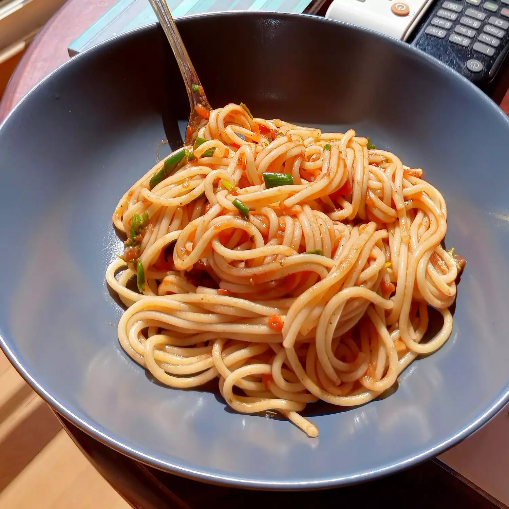

Spaghetti

Description
Your favorite spaghetti sauce gets a delicious make over when combined with cream cheese and cooked ground beef.
It's mixed with hot cooked spaghetti for an easy supper.
Ingredients
- 1 pound lean ground beef
- 1 (24oz) jar spaghetti
- 4 oz philadelphia cream cheese, cubed
- 8 oz spaghetti, cooked and drained
- 2 tablespoons Kraft grated parmesan
Steps
- Cook spaghetti as directed on package
-
Meanwhile, brown mean in large skillet. Stir in sauce and cream cheese;
cook on low heat 3 to 5 min. or until sauce is well blended and heated through, stirring frequently
- Drain spaghetti. Add sauce; mix lightly. Place on platter; top with Parmesan